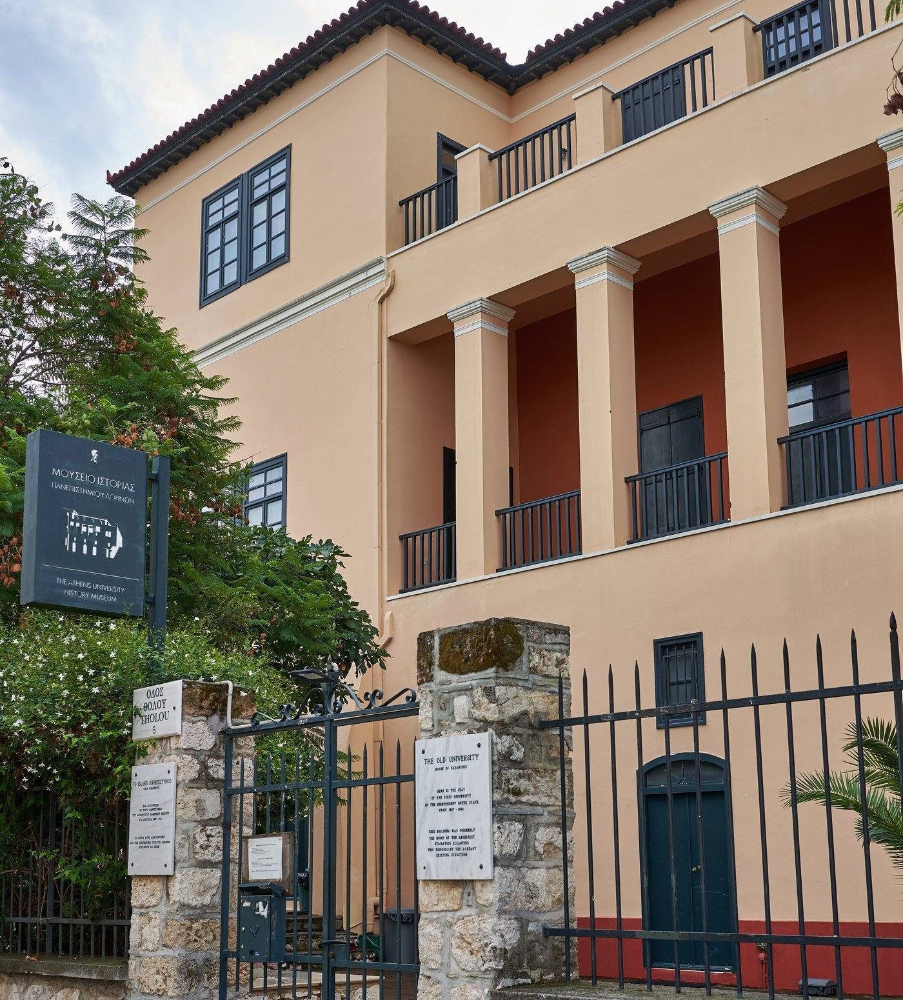

The Old University
A neoclassical house in the heart of Plaka that was Greece's first university, now the venue for 3DOR 2027.
- Address
- Tholou 5, Plaka, 105 56 Athens
- Nearest metro
- Monastiraki & Syntagma ≈10-15 min walk
- First university
- 1837-1841
History
-
Before 1800
An Ottoman-period house stood on the site, part of the old neighbourhood of Plaka beneath the Acropolis.
-
1831
Architects Stamatios Kleanthis and Eduard Schaubert bought the house and restored it as their own residence and architectural office.
-
1837-1841
The building became the first seat of the University of Athens, home to the newly founded Greek state's first university.
-
Later 19th c.
After the university outgrew the building, it served a series of other uses, including as army barracks.
-
1967
The building passed into the ownership of the University of Athens.
-
1987
It opened to the public as the Museum of the History of the National and Kapodistrian University of Athens.
-
2027
The museum hosts the 20th 3DOR Symposium.
Gallery
Click any photo to enlarge. Use the arrow keys to move between photos, Esc to close.
Getting there
Monastiraki (lines 1 & 3) is about a 10 minute walk through the Plaka lanes.
Syntagma (lines 2 & 3, and the airport line) is about a 12 minute walk.
Akropoli (line 2) is about a 15 minute walk, mostly through Plaka and past the Acropolis.
From Athens International Airport "Eleftherios Venizelos" (ATH), metro line 3 runs directly to Syntagma and on to Monastiraki; the X95 express bus also runs to Syntagma.
Early September in Athens is typically warm and dry, with daytime temperatures often around 30 °C.
Collections
Scientific instruments
19th-century instruments used for teaching and research across the university's early schools.
Seals, 1837
The original seals of the university and its first four schools, struck in the year of its founding.
Rare books
Early editions and textbooks from the university's first decades.
Manuscripts
Administrative records and correspondence documenting the university's founding and early years.
Portraits
Portraits of professors and rectors from the university's first generations.
Nearby
- Roman Agora≈3 min walk
- Anafiotika≈5 min walk
- Ancient Agora≈8 min walk
- Acropolis≈12-15 min walk
- Acropolis Museum≈15-18 min walk
Accommodation
To be announced
Suggested hotels near the venue, and any negotiated rates, will be listed once the venue is fixed.
Registration
To be announced
See the contact page for the organising committee's details.